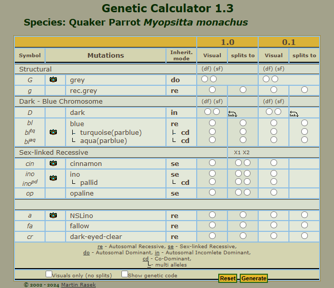

Genetická kalkulačka
Ti, kteří se zabývají chovem mutací papoušků, mohou navštívit webové stránky www.gencalc.com
Jedná se o genetickou kalkulačku, která vám sdělí výsledek barev odchovů pro libovolně sestavený pár.
Zobrazí pravděpodobnost všech možných kombinací.
Autorem genetické kalkulačky je ing. Martin Rašek, externí redaktor časopisu PAPOUŠCI.
